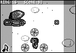

|
|
| 作者：GENGEさん【ゲンゲの部屋】 |
P/ECEのマスコットアプリです。グラフィック、設定などのファイルを用意すればマスコットの作成が出来ます。、、、というか誰か作ってー（ォィ
時計合わせ、ランチャも付いて完成版ですよ。 |
スタートメニューがWindowsっぽくで◎。一通り機能が揃っている点は評価高。他の人が作ってるマスコットアプリにも言えるのですが、もうちょっと簡単にゴースト…じゃなかったマスコットが作れればなーと思います。
アプリランチャは色々発表されているけど、遊び心や演出重視に作られているところが他とは違う点。一つ一つの動きに気が配られて、それでいて演出は軽快なので実用でも問題ない快適さになっているのが考えられている。ちょっとP/ECEを立ち上げて、何か他のアプリを立ち上げる前に、気持ちをほっと落ち着けたり、にやりとさせられたりと、それだけで楽しく思える。設定ファイルサンプルは、ちょっと簡単に作ってみよう、と思うユーザにとっては少し敷居が高いかもしれない。 |
|
|
| 作者：ていこくさん【虚空堂本店Extra】 |
| P魂2003に応募した「T-Beat」の続編です。前作と比べ、BPMの自由化、画像の表示などが更新されています。
|
楽曲データの個別ファイル化、アニメーションの表示など、かなり完成度を上げてきた印象。ただアニメーションに負荷をかけている分、以前より判定が悪くなってるような気もしました。あと、押さなくても音が鳴るのは『MUSIC
COMMANDER』を参考にすれば改善できるかな。それから是非、ユーザが楽曲データを作成できるように。
不思議なもので、音単体で聞くとP/ECEの音質はそんなに良くないのに、音ゲーになった途端、いわゆるピコピコサウンドが映えて心地良い音楽に聞こえてしまう。ゲームとしてもT-Beatの出来は秀逸だが、遊んでいるとP/ECEの音が豪華になったように錯覚する瞬間があり、P/ECEユーザとしてはそのカタルシスが楽しい。一点、液晶の問題ではあるのだが、残像によって連符数が把握しにくいのは問題。連符時は横棒を区切るなどして残像対処の工夫が欲しいところ。 |
|
|
| 作者：Acerolaさん【Acerola
Software】 |
| P/ECE用アプリケーションランチャです。プログラムの起動やファイルの削除、各種設定の変更の他、ボタン1つでプログラムを起動できる「ショートカット機能」を付けてみました。MMC／SDカード対応版も同梱されています。
|
普通に便利なんだけど、良く出来ているという評価止まり。MMC/SDカード改造やった身としてはそれなりに重宝はするのですが…。ショートカット機能は、沢山アプリを入れている時には有難い機能。
一覧性とデザインを重視したアプリランチャ。小フォントを使ったためにリストが少々見にくいのが難点だが、機能・操作性ともに申し分ない。MMC対応版があるということで、本体改造を行った後は重宝だろう。ウリのショートカット機能だが、できることならP/ECE単体でショートカット先を変更することができればありがたい。また、Bボタン以外にも複数のショートカットを設定できると便利ではないだろうか。2MB改造やMMC対応があり、ファイル数を大量に入れられるようになった今、ショートカット機能は注目されるべき一点だと思う。 |
|  |
|
| 作者：白滝なるさん【HARUKA@】 |
| 昨年公開した『ふわふわ彩花』の続編です。コミケ67配布予定になっています。（これは体験版になってます）オプションを当てて敵を倒していくシューティングっぽいアクションゲームとなっています。P/ECEの残像の限界へ挑戦…？
|
このゲームは二次創作云々関係なしに、普通のSTGとして楽しめました。完成度は高いと思います。キャラクタが大きいのと、P/ECEの液晶が横長なのでプレイ自体が少し苦しんだ印象。
二次制作物ということで残念なのは、プレイヤがその元のゲームを知らないと感情移入できない（知らなくてもゲーム性としては問題ないのだが、知らない情報があるということで壁がどうしてもできてしまう）ことだが、ゲームとしてはP/ECEの限界や実態を知り、よく出来ている。キャラの速度がそれほど速くなく、またサイズも大きい状態でバランス調整をしているので、液晶の弱いP/ECEであっても快適なプレイが楽しめた。選べるキャラによって攻略も変わってくるので、体験版とはいえ結構遊び込める作品だろう。 |
|
|
| 作者：白滝なるさん【HARUKA@】 |
ネタが好評だった『智代ちん！コンボ！』のパワーアップ版です。ゲーム内容はパンチング＋コマンド入力ゲームとなり、演出、ゲームバランス等バージョンアップされています。すばやく的確に操作して、春原を凹りましょう！
『智代ちん！コンボ！』CLEARSAVEDATAがあれば、完動版となります。（通常は体験版として機能します）
|
こっちは…元ネタが分からないと若干ツラいかなーと思います。画面の綺麗さは折り紙付きなんですが。あと、ドキュメントをもう少し充実させて欲しかったなーと。
二次制作物として…前述参照。CLANNADは知っていたので実に楽しめたと、『ふわふわ彩花２』との温度差を比べると、原作を知っているかどうかが非常に重要なのがわかってしまう。各キャラのセリフや、そもそもなんで「春原」が殴られているのかというシチュエーションが楽しめるかどうかがカギであり、やはりその点で敷居が高くなってしまっているのがもったいない。コンボをつなげていく過程で出現するコマンド入力が、SEと相まって心地良い。ミニゲームとして楽しめ、プレイ時間の割に映像リソースがふんだんに使われているのは豪華さを感じる。 |
|
画像なし
|
|
| 作者：まるしすさん【JBA-soft
WWW営業所】 |
| パソコンのソフトとP/ECEを繋ぐ橋渡しとなれば幸いです
|
使える環境がなくて審査できないという方も多かったのですが、個人的にはコミケでムービーのデモを見せていただいたこともあり、かなり可能性を感じています。Visual
Basicをターゲットに置いたことで、Visual
C++とかはツラいって人でもP/ECEと通信するソフトを作れるというのは大きいと思います。
世の中にVBプログラマは思ったよりも多数いる。ゲーム業界に限って言えば、VBよりもCユーザの方が多いように感じるが、ビジネス社会においてプログラマとは実はVB使いを指すのであり、Cユーザはゲームプログラマやシステムエンジニアのカテゴリに傾いている。そんなわけで、VB用のコンポーネントというのは非常に意義がある。P/ECEは開発会社やメインユーザの関連で、ゲーム端末と思われがちだが、P本やAQUAPLUSではゲーム端末という言葉を一切使ってない。P/ECE本体価格の手頃さもあり、このコンポーネントとP/ECEのセットは、ビジネスアイテムとしての可能性を広げるものだ。 |
|
画像なし
|
|
| 作者：Randomistさん【Randomizm
Zone】 |
| 音楽再生を含む複数のプログラムで音色データを共有し、P/ECEのフラッシュメモリ容量を節約するためのライブラリです。
|
いつもお世話になっております。ドラム音色データのファイルがP/ECE上に無い場合もエラーを起こさずにドラム演奏無しで演奏できるというのは素晴らしい。まだ使ってない方にも、是非利用してもらいたいです。
実は、P本を執筆していた際に、これと同じようなアイデアを考えていた。P/ECEアプリの中で容量を食うのは、実はPCMデータだった。共用できるデータなのだから、いわゆるWindowsDLLと同じような仕組みにできないものだろうか、と。しっかりとした形で実現され、また、多くのプログラムが対応しやすいような形をとった本キットは非常に素晴らしい。現在では多くの大容量作品が本キットに対応していることもあり、１ユーザとしてもそのありがたみは感じることができるのではないだろうか。 |
|
|
| 作者：Randomistさん【Randomizm
Zone】 |
| エクスプローラ風の軽量ファイラーです。フォルダを作りプログラム、データを分類して管理できます。プログラムの実行以外にファイル名の変更、ファイルのコピー・削除、時刻・音量・コントラストの調整などができます。
|
これも良くお世話になるアプリ。P/ECE内のアプリを整理して視覚的に分かりやすく表示できるのは大変ありがたいです。リクエストとして、フォルダの移動云々をPC側でのコンフィグファイル編集だけでなく、P/ECE側でも出来た方が便利かなーと思います。それ以外は…もう必要な機能はほぼ実装してしまった感もありますね。余計な機能をつけて必要セクタが増えるのは本意ではないですし。
P/ECEの運用形態は主にPersonalなものだろう。正直言ってしまえば、その基本運用形態である以上、この作品を使う理由は薄いと思う。P/ECEの本体容量の都合上、自分で入れたアプリはどんなものだったか、忘れることは少ないはずだからだ。しかし、P/ECEを誰かに渡して使わせる、という時、本作品の特徴であるカテゴリ分けが大きな力を発揮する。「アクションゲーム」「パズルゲーム」「ツール」と言ったようにカテゴリ分けされていれば、初めて扱う人はジャンルを頼りにアプリを選び出していくだろう。その点に、本作品を使う価値があると思う。
|
 |
|
| 作者：Randomistさん【Randomizm
Zone】 |
| P/ECEを無理やり楽器にするソフトです。操作性は非常に悪いですが、格闘ゲームの超必殺技コマンドのつもりで練習すれば演奏できるようになるかもしれません。
|
ネタとしてはかなり秀逸（笑）。さすがに斜め入力は厳しいと思いますが、ボタン数の制約上これが一番マシなのでしょう。音ゲーの種としても使えるかもしれませんね。これで「大合奏」してみたいです（笑）。
失礼な話だが、本作品をいじり倒している間、笑いが止まらなかった。P/ECEを楽器にするというアイデアそのものは楽しい。しかし、この操作性で演奏というのは無茶苦茶だ。反応速度は非常に良好だが、そもそもP/ECEのパッドで正確に斜め押し・同時押しをするのに無理がある。思った音が出ない。頭の中の楽譜と耳に届くチープな音にはずれがある。だけど、これが楽しい。変な笑いがこみあがってくる。とりあえず、目を瞑って「きらきら星」が演奏できるまでにはなったが、そこまで含めて全部「楽しいネタ」だと言えるだろう。
|
|
|
| 作者：ささぴ～さん【ゲームオーバー工房】 |
| グラフィック専用多機能ライブラリです。基本的な描画の他にウィンドウ・半透明・３Ｄテクスチャポリゴン・光源などをサポート。ＰＳＰみたいなゲームも開発出来る（かもしれません♪）
|
スゴイ、スゴイんですが、サンプルだけでは評価しづらいモノでした。これを利用したゲーム作品なんかが実際に出てくれば、面白いことになってくるとは思うんですが。今後に期待ですね。
技術的に純粋に、良く作ったなーと感じた。スプライト処理の2D機能は、実用的に使うことができるだろう。目立たないが、描画用仮想ウィンドウなどはコンシューマゲーム機にも実装されている非常に有用な機能で、作者による機能の取捨選別の正しさを感じる。3D機能は、実用はともかく、3D入門用として活用できるのではないだろうか。マトリクス計算やカメラ処理、Zバッファなど入門用として必要十分に揃っている。願わくば、3Dを扱ったことのない人も、本作品でその基礎知識を身につけてもらいたい。そのきっかけを作ってくれる本作品は、とても価値のあるものだ。
|
|
|
| 作者：ぴょるしーさん【ANGEL
KNIGHT】 |
| 1980年あたりに発売されたゲーム電卓、デジタルインベーダーとエイトアタックをPIECEに移植したもので、おまけで電卓機能も持っています。また、冬コミで無料配布した際は、特定の年代の方に好評で、持っていかれた方の半数は、PIECEは持っていないが購入を検討する、又は最近PIECEを使っていない方でした。
|
結構懐かしい方多数だったみたいなんですが、俺はちょっと世代違いでした＿|￣|○
ですがコミケで実機と比較させていただいた時に再現性には驚きました。これでP/ECE持ってない人が購入に走るなら嬉しいですね。
懐かしい、と言ってくれるプレイヤがどれだけいるかが、作者の一番気になるところであろう。ボクは実機を持っていたわけではなかったけれど、電気屋のレジ近くで良く遊んだもので、その頃を思い出して遊ばせてもらった。ゲーム性というより、このデジタル数値表記でゲームを、という当時のアイデアにユーザは驚いて欲しいところだ。良く再現されていると思う。おまけの電卓機能も申し分ないが、現在のファミレスの形態を考えると、残念ながら活躍の場はあまり多くないのでは無いかと思えてしまう。作者のページを見ると、今後もゲーム電卓シリーズを予定されているようで、今回の再現性からするに期待せずにはいられない。
|